|
 |
教你炒股票11：不会吻，无以高潮！
(2006-11-29 12:00:00)
甄别“早泄”男，必须要选择三个独立的系统。其中一个最常用的，就是所谓的技术派玩意。单纯的技术派是不行的，单纯的非技术派也是不行的。技术派的玩意，必须也只能在三个独立系统里，才会有大的功效。
技术分析，最核心的思想就是分类，这是几乎所有玩技术的人都搞不清楚的一点。技术指标发出买入信号，对于技术派来说，就以为是上帝给了暗示一般，抱着如此识见，几乎所有技术派都很难有大的成功。技术指标不过是把市场所有可能的走势进行一个完全的分类，为什么技术派事后都是高手，真正干起来就个个阳痿，就是这个原因。
技术分析可说的东西太多了，这指标那指标，如何应用，关键就是上面所说的分类问题。任何技术指标，只是把市场进行完全分类后指出在这个技术指标的视角下，什么是能搞的，什么是不能搞的，如此而已。至于这个指标对应的情况是否百分百反映在实际的走势上，这个问题的答案肯定是否定的，否则所有的人都可以按照这指标操作，哪里还有亏钱的人？然而，只要站在纯粹分类的角度考察技术指标，那么，技术指标就会发挥他最大的威力。
最简单又最实用的技术指标系统就是所谓的均线系统。均线系统显然不是一个太精确的系统，太多的骗线。如果你按照突破某条均线就买入操作，反之卖出，那你的成功率绝对不会高，特别当这条均线是短期的。真正有用的是均线系统，也就是由若干条代表短、中、长期走势的均线构成的技术评价系统。
注意，任何技术指标、系统，本质上都是一个评价系统，也就是告诉你在这个系统的标准下，评价对象的强弱。例如，一条5日均线，站在上面，代表着用5日均线对市场所有情况进行分类，目前站在5日均线上这种情况意味着是强势。然而，站在5日均线上的同时，可能对于10日均线是在其下，那对于10日均线的系统评价，这种情况就是弱势了，那究竟相应的走势是强还是弱？
其实，强弱都是相对的，关键是你操作所介入的标准。对于超超短线来说，在1分钟钱上显示强势就可以介入了，特别在有T+0的情况下，这种操作是很正常的。但对于大资金来说，就算日线上的5日强势也不足以让他们感兴趣。任何技术指标系统的应用，首要的选择标准都和应用的资金量和操作时间有关，脱离了这个，任何继续的讨论都没有意义。因此，每个人都应该按照自己的实际情况来考虑如何去选择相应的参数，只要明白了其中的道理，其应用完全在于一心了。
均线系统，必然有着各条均线间的关系问题，任何两条均线的关系，其实就是一个“吻”的问题。按“吻”的标准，可以把相应的关系进行一个完全分类：飞吻、唇吻、湿吻。把短期均线当成是女王，长期均线当成面首，那么“男上位”意味着空头市场，而“女上位”意味着多头市场，要赚钱，就要多来点“女上位”。
飞吻：短期均线略略走平后继续按原来趋势进行下去。
唇吻：短期均线靠近长期均线但不跌破或升破，然后按原来趋势继续下去。
湿吻：短期均线跌破或升破长期均线甚至出现反复缠绕，如胶似漆。
飞吻出现的几率比较少，一般都是在趋势特别强烈的时候，而太火暴的趋势是不可能太长久的，所以其后的震荡经常出现；唇吻，任何一段基本的趋势过程中最常见到的方式，特别在“男上位”的情况下，基本都是这种方式，一旦出现唇吻反弹基本就该结束了，在“女上位”的情况下，调整结束的概率也是很大的，但也要预防唇吻演变成湿吻；湿吻，一段趋势后出现的较大调整中，还有就是在趋势出现转折时，这种情况也很常见，特别是在“男上位”的情况下，如果出现短、中、长各类均线来一个NP的湿吻，这么情色的AV场景往往意味着行情要出现重大转折，要变天了，“男上位”要变成“女上位”了。
注意，任何的行情转折，在很大几率上都是由湿吻引发的，这里分两种情况：一种是先湿吻，然后按原趋势来一个大的高潮，制造一个陷阱，再转折；另一种，反复湿吻，构造一个转折性箱型，其后的高潮，就是体位的转化了。
在“男上位”的情况下，一旦出现湿吻，就要密切注意了，特别是这个湿吻是在一个长期“男上位”后出现的，就要更加注意了，其后的下跌往往是介入的良机，因为空头陷阱的概率简直太大了。必须提醒，这一点对趋势形成的第一次湿吻不成立。但湿吻之后必有高潮，唯一的区别只是体位的区别，关键判断的是体位而不是高潮的有无。(注：长短均线反复缠绕粘合，最终必有方向的选择。）
会吻，才有高潮，连吻都不会，怎么高潮呢？
--------------------------------------------------------------------
每日解盘（2006-11-29 12:03:27）
缠中说禅： 缠中说禅： 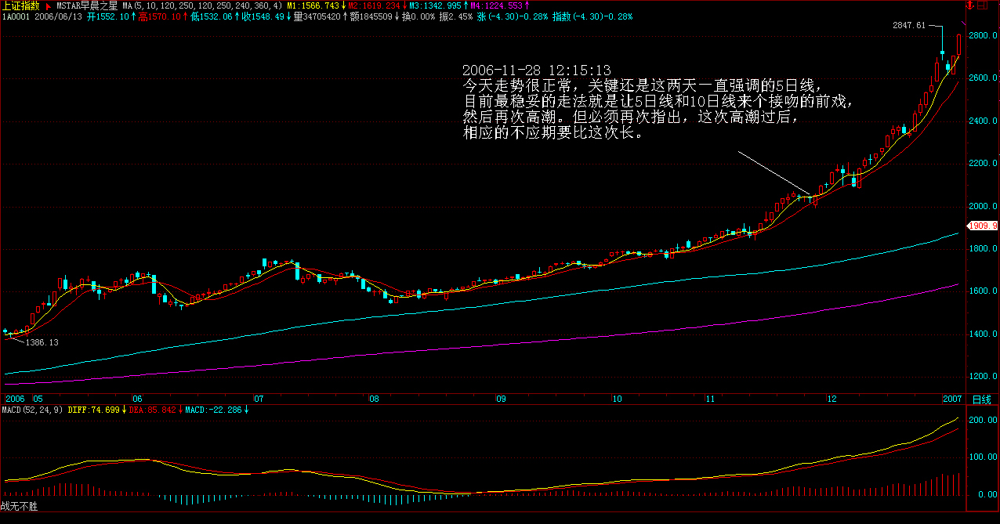 缠中说禅：2006-11-29 15:14:38
今早刚开盘时就让技术好的选择不跌的股票，有机会；技术不好的就看5日线。一般来说，技术不好的，这类震荡就上上下下享受一下就完了。技术好的，这是打短差降低成本或者换股的好机会。目前走势很简单，就是5日线能否站稳的问题，站稳就继续冲击一波，因此明天的震荡依然难免，强的就在5日线站整固，一般就围绕5日线折腾，弱的还要跳跳水、吓吓人。但对于个股来说，大盘怎么走都不是问题，下一波是个股普遍有表现的一波，很多前期没大动的，都要好好表现一把，其实这次调整，很多股票都创新高，个股比大盘重要得多。如果一定要看指数，就看深圳成分指数，这比上海的敏感有效。至于上海指数，5日、10日线唇吻还是湿吻，其实都不大重要，但这次调整后再上一波后的那次调整，规模就会大多了，这已经反复说过。从大盘健康的角度说，本ID给大盘的建议是：先深成指突破6103点的历史高位，然后上海跟上，突破以后再调整，这样更健康。不知道大盘有没有兴趣听本ID的意见了。
每日解盘（2006-11-30 11:43:54 ）
缠中说禅：2006-11-30 11:43:54 该结论继续有效 缠中说禅：2006-11-30 11:45:32
今天大盘有点接受了本ID的建议：
缠中说禅2006-11-29 15:33:18
[匿名] 青皮六2006-11-29 15:27:39
为标题图片送一句诗:花径不曾缘客扫,蓬门今始为君开.请教女禅师银行股会在12月11日前基本调整到位吗?
===========
其实让他们调整时间更长会更健康，这一波就让别的股票表现，他们在这里进行上升三角型或旗型的整理，这样对大盘中线走势更有利。昨天说的，目前关键看招行，他率先突破历史天价，他的走势，就是大盘的风向标。总之二线股是下面最多表现的，然后是三线，把握还节奏。
缠中说禅：2006-11-30 13:03:57
开盘了，先下。突破的有效性在今天下午和明后两天需要确认。其后走势是否能如本ID建议那样，就继续看了。
缠中说禅：2006-11-30 15:13:57
今天大盘走势十分规范，下午两点如期一波跳水确认突破的有效性后，继续上扬，唯一不足的是启用了银行股冲关，这与深沪两市的资金争夺有关，这在每次的行情中都有体现。谁先突破历史新高，对两个市场的管理者的好处是很大的。明天出现震荡很正常，只要5日线不破，本ID给市场的建议能够成为现实的可能性将继续增加。个股还是看好二线股，而三线股的蓄势补涨依然可期。附录本ID建议：
缠中说禅2006-11-29
15:14:38
从大盘健康的角度说，本ID给大盘的建议是：先深成指突破6103点的历史高位，然后上海跟上，突破以后再调整，这样更健康。不知道大盘有没有兴趣听本ID的意见了。
----------------------------------------------------------------------------------------
回复： 2006-11-29
12:33:44
权证天天都可以介入，天天都有机会，关键是你是否有这样的技术。580002震荡区间不断缩小，湿吻不断，高潮快到了，先关注体位吧。
(2006-11-29 12:05:27)
------
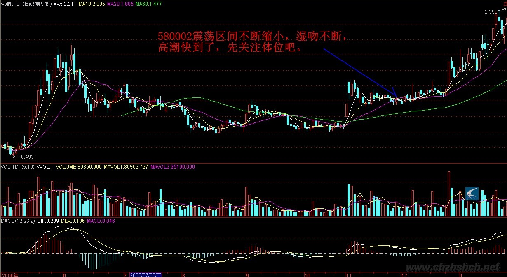
[匿名] 打死你我也不说
2006-11-29 12:11:39
数女写的仓促，有错别字。
==========
谢谢，最近有点忙，昨天一直有应酬，这是刚刚收市半小时赶出来的，等一下改改。
(2006-11-29 12:12:45)
------
[匿名] MM2006-11-29 12:11:45
狂歌
“与天其时，天与其时”=“与天其时，天与其时”+“天与其时，与天其时”，这是一个并列的关系，这都不明白，这么读的中文？
===========
你的理解稍微好点，也不对。
(2006-11-29 12:14:26)
------
[匿名] 打死你我也不说2006-11-29 12:16:53
狂歌，不是我说你，连常识都不懂，国债327没有谁违规，当时根本就没有相应的条款。
==========
当时连交易都可以不算的，也算奇迹了。
(2006-11-29 12:30:56)
------
[匿名] 河东蝉林听禅音2006-11-29 12:20:00
========
你的股票中线都有补涨机会，等着吧。至于书籍，还是看这里吧，其他的书籍，基本思路就是错的，先把基本思路定了，才看不迟。
(2006-11-29 12:38:10)
------
[匿名] 数女粉丝2006-11-29 12:39:53
写的真好,一直在学习中.非常感谢数女!
======
关键要拿着图形自己对照，这里的都是概念，要化为自己的直觉才行。
(2006-11-29 12:41:18)
------
任我行2006-11-29 12:43:15
楼主帮我看030002还有没有上涨动力
=============
正股挑战前提高位，一旦成功，空间完全打开，暂时耐心持有、好好观察，5日线不破就有成功希望。
(2006-11-29 12:55:29)
------
任我行2006-11-29 12:45:17
600639怎样地产股还会不会涨
===========
不要问还会不会涨，这是一个错误问题，而是应该判断，现在正在涨中，这就足够了。
(2006-11-29 12:57:30)
------
看盘了，先下。再见。
(2006-11-29 12:58:08)
------
[匿名] 数女粉丝2006-11-29 12:57:45
谢谢你的提示。这半年几乎每天都光顾你的博客，从中学到很多的知识。
===========
谢谢，先下，再见。
(2006-11-29 12:59:20)
[匿名] 小屁孩2006-11-29 15:01:22
博主你好,昨天我买入600500被套,痛苦中,请博主给分析一下.谢谢.另外它还有可转债,我应不应该要?
=============
习惯在接吻探底时买，这时候风险最小。中线问题不大，短线买的不好，就套一下，权当上了一堂卫生课。
(2006-11-29 15:19:14)
------
[匿名] 老豆2006-11-29 14:24:16
你好，数妹，能帮我看看600262，000301，600082吗？先谢了
==============
中线都问题不大，耐心点。市场中不要习惯于问为什么？而要习惯于现在是什么，符合什么，只要符合持有的就持有，符合卖出的就卖出，就这么简单。
(2006-11-29 15:23:15)
------
[匿名] yy2006-11-29 15:12:30
博主你好,请博主给分析一下600498短线如何?
===============
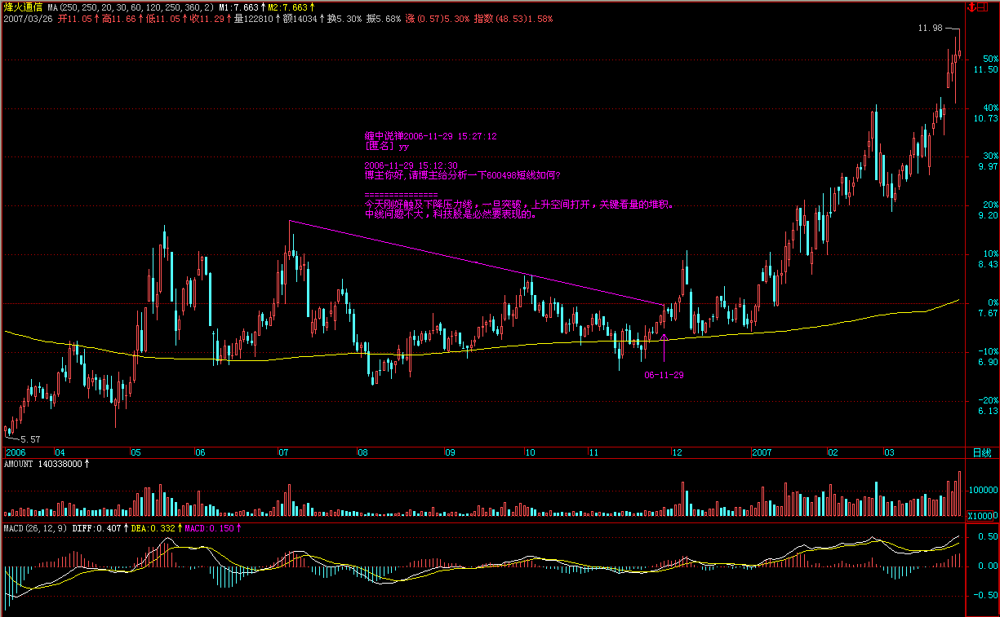
今天刚好触及下降压力线，一旦突破，上升空间打开，关键看量的堆积。中线问题不大，科技股是必然要表现的。
(2006-11-29 15:27:12)
------
[匿名] 青皮六2006-11-29 15:27:39
为标题图片送一句诗:花径不曾缘客扫,蓬门今始为君开.
请教女禅师银行股会在12月11日前基本调整到位吗?
===========
其实让他们调整时间更长会更健康，这一波就让别的股票表现，他们在这里进行上升三角型或旗型的整理，这样对大盘中线走势更有利。昨天说的，目前关键看招行，他率先突破历史天价，他的走势，就是大盘的风向标。
(2006-11-29 15:33:18)
------
[匿名] 夜雨2006-11-29 15:23:58
美女姐姐,我的580004会有高潮吗,还是早泄了,我的成本2.34,等了好几天他的高潮都不来.其他正股倒是牛的很,
===========
你买的位置不好，被折腾是理所当然的，对箱型的走势，一定要在箱底买，这样止损也简单。目前正等待均线系统的粘合，耐心点吧。
(2006-11-29 15:37:07)
------
[匿名] 老豆2006-11-29 15:24:14
你好，数妹，能帮我看看600262，000301，600082吗？先谢了
=========
上面已经回答了。
(2006-11-29 15:37:47)
------ [匿名] 痒痒2006-11-29 15:32:52
请博主分析一下600177的走势。谢谢！
===========
这股票，原来被吹太多，筹码太散，所以走势特别反复。中线会有表现的，短线6。5元压力，突破空间打开。
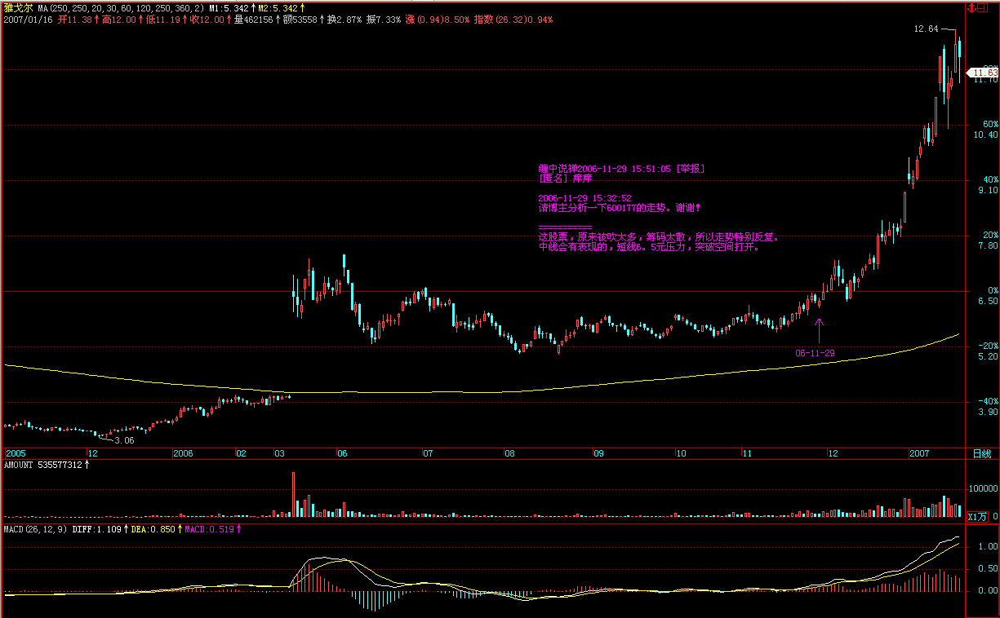
(2006-11-29 15:51:05)
------
风顿2006-11-29 15:33:47
lz好！请帮忙看看600348
==========
会表现的，等着吧。
(2006-11-29 15:55:54)
------
今天就到这了，晚上有应酬，先下，再见。
(2006-11-29 15:56:38)
------
[匿名] 缠粉2006-11-29 17:25:45
缠姐，9.7进的水井坊，还能继续持有码？
==========
连5日线都没破，最强势，当然要持有。
(2006-11-30 09:16:38)
------
[匿名] 小迷糊2006-11-30 08:49:38
数女妹妹,假如人民币持续升值,和美圆比价突破1比6.那么受益的股票有那些?我考虑的不是很清晰,请指教一下.谢谢
===========
银行、地产、航空等，但这都是由头，所有都收益，因为指数就有了继续大涨的最坚实理由。日本、台湾等的历史性大牛市都是由此而产生。
(2006-11-30 09:18:27)
------
[匿名] 湖边人家2006-11-29 22:33:16
很想问问数女妹妹，000007我持有大半年了，大盘涨这么多，它怎么就不动呢？我是要换股还是继续持有？谢谢。
=========
三线股，等二线涨了就到他了。
(2006-11-30 09:19:47)
------
[匿名] 缠粉2006-11-29 21:25:20
姐姐，“必须提醒，这一点对趋势形成的第一次湿吻不成立。”这一句怎么理解？？？什么是趋势？
[匿名] yf2006-11-30 04:47:40
明白那几条线是怎么回事啦！不知MACD是咋回事？我也问过别人，人家说:于无声处听惊雷。搞得自己很没有面子。呵呵。
============
这些下面都会说到，请耐心点。
(2006-11-30 09:21:06)
------
[匿名] 老无用2006-11-30 12:53:04
请教楼主000851走势？谢了
============ （买卖）
30天线有效跌破前应该一路中线持有，除非出现放量加速上涨的情况。
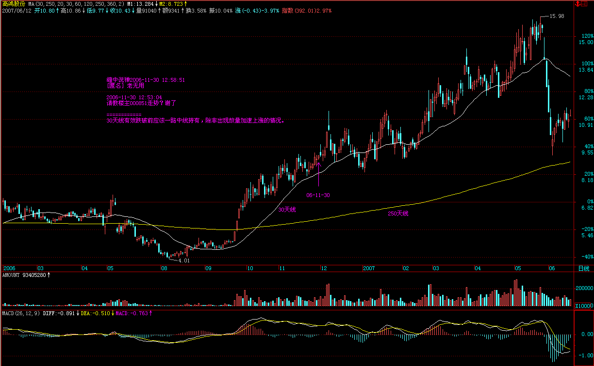
(2006-11-30 12:58:51)
------
=====《论语》详解：给所有曲解孔子的人（36） 486e105c010007dt=====
总之， 二线股是下面最多表现的，然后是三线，把握好节奏。
(2006-11-30 11:45:32)
------
[匿名] 一声叹息 2006-11-30 11:55:54
请博主看看600857最近能不能搞出高潮来啊？先谢了！
========
短线大涨后的整固，再放量还有一次启动。
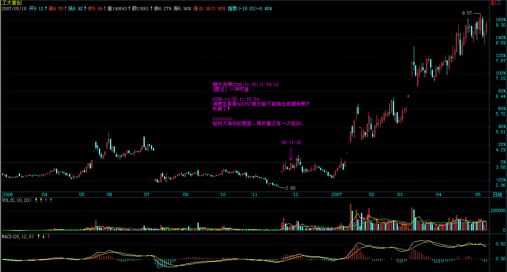
(2006-11-30 11:59:12)
------
[匿名] 搞不懂 2006-11-30 11:59:32
请问数女，002066能不能搞一下？
=======
中线没问题
(2006-11-30 12:00:56)
------
[匿名] 袖手旁观
=================
命无以为君子也，言无以知人也。并没语法问题。
(2006-11-30 12:01:51)
------
[匿名] 希望你过得比我好 2006-11-30 12:13:00
楼主：您点评的路桥建设真的拉了一根中阳钱，可我已以出了，听了您的话，第二天又进去了，现在算是浅套了点，这样大的行情之下都能套住，说出来真丢人，但没有办法。
============
出了的股票怎么能又进去呢？世界上不是只有一只股票，抛弃了就不捡回来。 心态要好一点。
(2006-11-30 12:16:15)
------ （买卖）
既然又弄错了，就将错就错吧，中线暂时问题不大。以后千万别这样操作了。
注意：不要因为涨得太多而抛股票，只有一种情况需要抛股票：就是这股票走弱了。
(2006-11-30 12:18:28)
------
[匿名] 缠禅2006-11-30 12:18:37
能否赐教600062
=====
向庄股演化中。
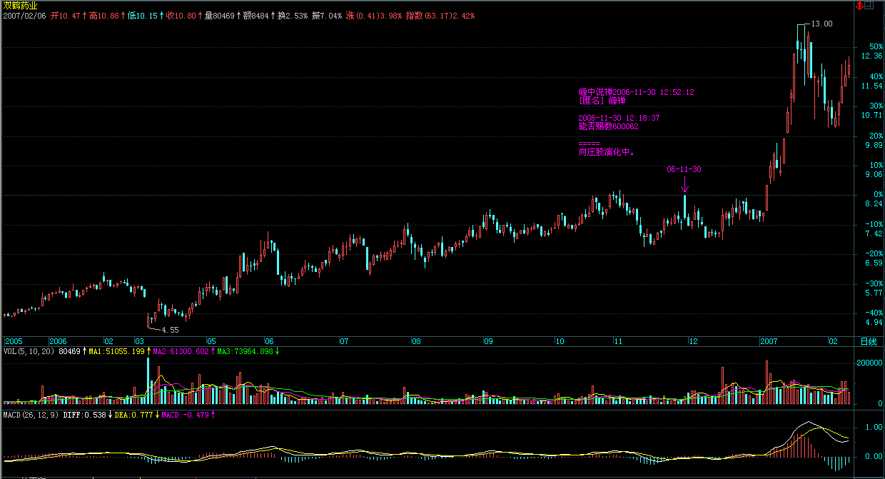
(2006-11-30 12:52:12)
------
[匿名] 远方2006-11-30 12:51:26
你好，请教601001大同煤业是否还可持有？
=============
中线蓄势中。
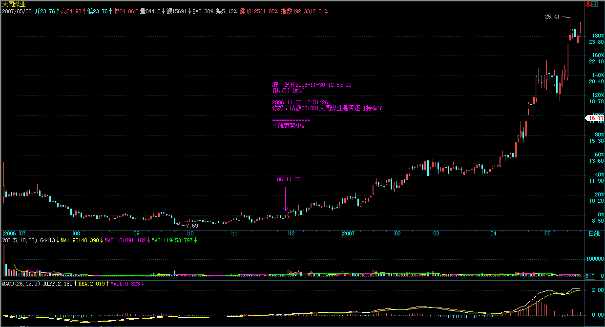
(2006-11-30 12:53:00)
------
[匿名] 想飞 2006-11-30 12:46:46
LZ,你是按什么标准把股票划分为一、二、三线的，因为弄不清，现在也不敢进，只是看着
================
这没有什么太明确的标准，都是约定俗成的。像发展是一线股，深房是三线股，这是历史形成的。当然业绩也有一定作用，太不是唯一的因数。
(2006-11-30 12:55:42)
------
[匿名] 半小时以上 2006-11-30 12:55:06
美女，昨天有人说你是一个“组合体”， 看到了吗
========
这种故事在本ID叫”喜欢数学的女孩“时，被本ID打击得无路可逃的左派就编造过，爱编造故事的人，只能是废物，和废物还需要浪费时间吗？
(2006-11-30 12:57:19)
------
[匿名] 外科医生 2006-11-30 12:59:31
请问小妹，一只股票走弱的标志是什么呢？破5日均线？
=============
不要习惯于这种机械化的思维。一切都根据实际情况来的，不同资金量、不同的操作水平，所确定的操作标准就不同。但一点是相同的，就是以我为主，定好相应的标准才操作。
(2006-11-30 13:02:47)
------
开盘了，先下。突破的有效性在今天下午和明后两天需要确认。其后走势是否能如本ID建议那样，就继续看了。
(2006-11-30 13:03:57)
------
[匿名] 秋阳
2006-11-30 15:11:07
请教小妹000900 600320后势如何?谢了!
=======
中线都在蓄势上攻。
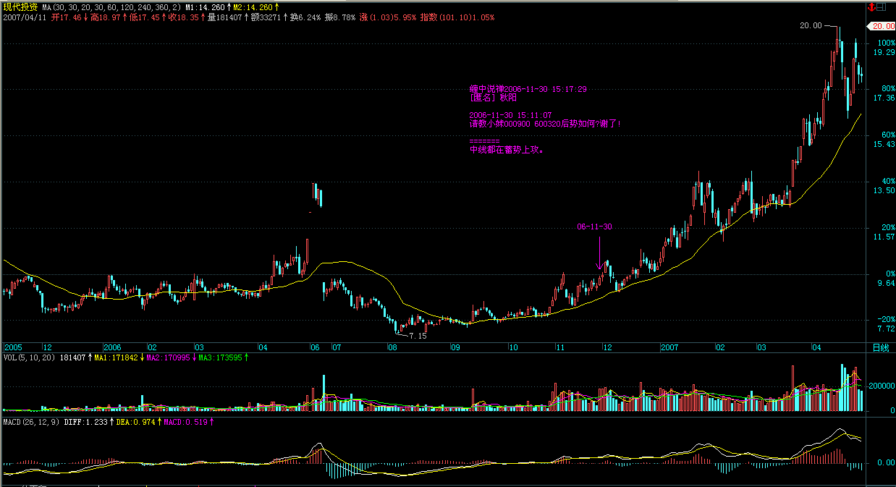
(2006-11-30 15:17:29)
------
[匿名] 清
讲正题，还是股市。关于我中信国安03年买入，S宁新百04年买入的问题，“本ID”对我也太不厚道，随便说了句“既然已经长线持有了，就一直持有到长线不能持有为止，而现在没有任何这样的信号产生。”至少得说说3个月/半年的投资评级“中性”“买入”“增持”“走赢大市”“减持”之类。或者对这两个股票的意见。
============
对不起，本ID不是股评，对这种上位的评级把戏没兴趣。本ID只告诉你具体的操作方法，对这两个股票，中长线的潜力还没有完全挖掘，当然就是一直持有等待中长线潜力完全耗尽为止。就像一个长期持有茅台的人，本ID只可能告诉他继续持有，在牛市里，预测任何股票的顶部都是荒谬的。这是思想方法的根本区别。
(2006-11-30 15:26:28)
------
[匿名] 夏日
2006-11-30 15:30:22
请教小妹000625 000969 后势如何?谢了!
===============
000625 中线潜力正在进一步挖掘中。
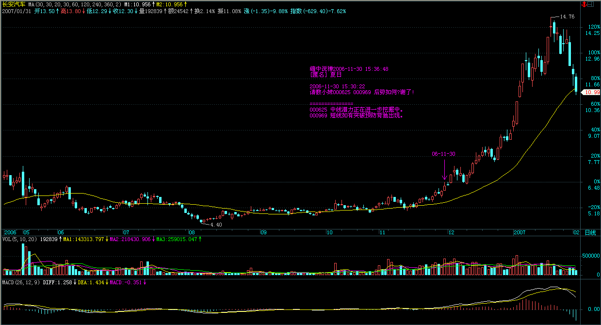
000969 短线如有突破预防背驰出现。
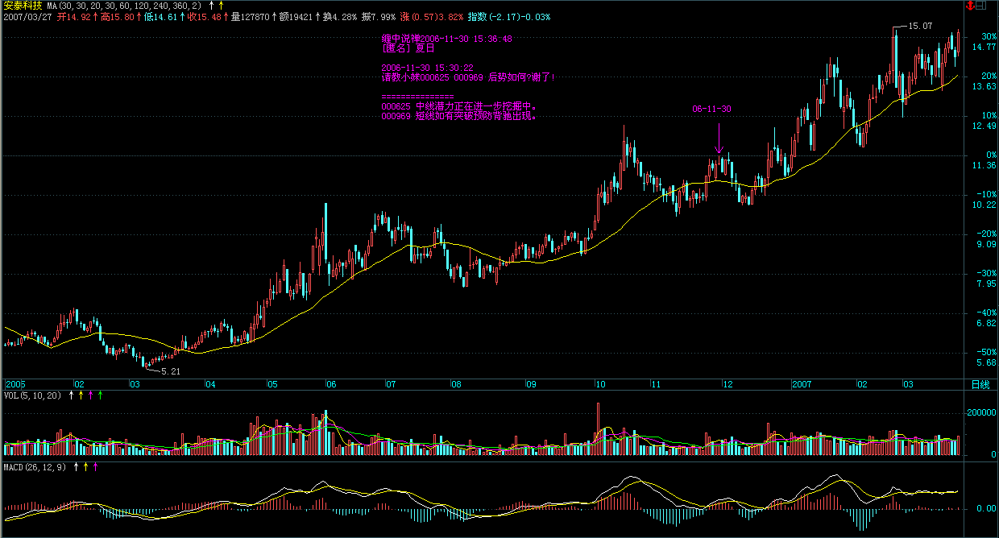
(2006-11-30 15:36:48)
------
[匿名] 小明 2006-11-30 15:36:53
楼主，今天对你的大作不太满意。俺觉得还是按照原来的断句挺好的。你这个有点牵强了，不喜欢。
=========
原来是站在“我本位”立场的胡扯，这点请仔细分辨。如果参照股票的操作，就更有意思了。慢慢想吧。 本ID晚上还有应酬，只能下了，再见。
(2006-11-30 15:41:51)
------
[匿名] 风花雪月 2006-11-30 15:42:37
美媚,你好!近一年来读了你所有的佳作,收益颇多,也就有了一句发自肺腑的话想对你说:"衷心的谢谢你!,并恳请你有机会到哈尔滨来玩,一定去接你."
另外,请帮助看一下600007,600178两股票在一段时间内的趋势(我是在2001年最高是买进的),谢谢!
==============
临走才看见，也回答了吧。600007解套并没太大困难，甚至会有意外的惊喜。600178，这个难度有点大，时间要长点，耐心点吧。
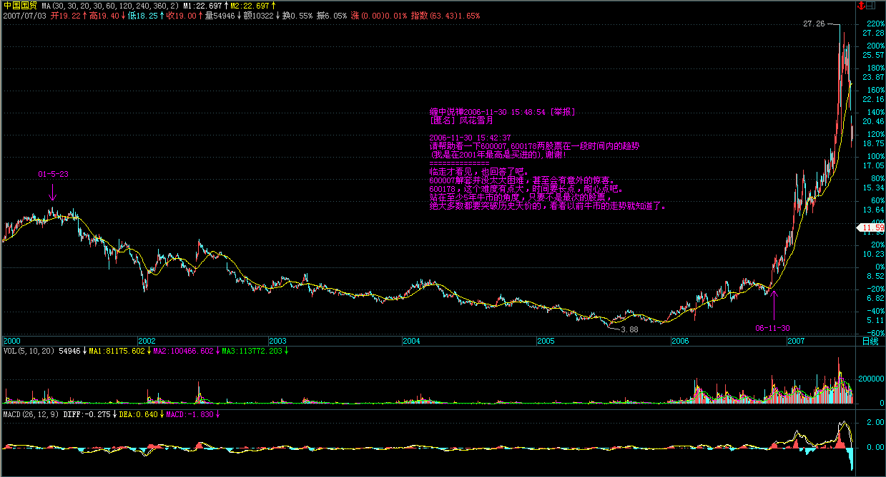
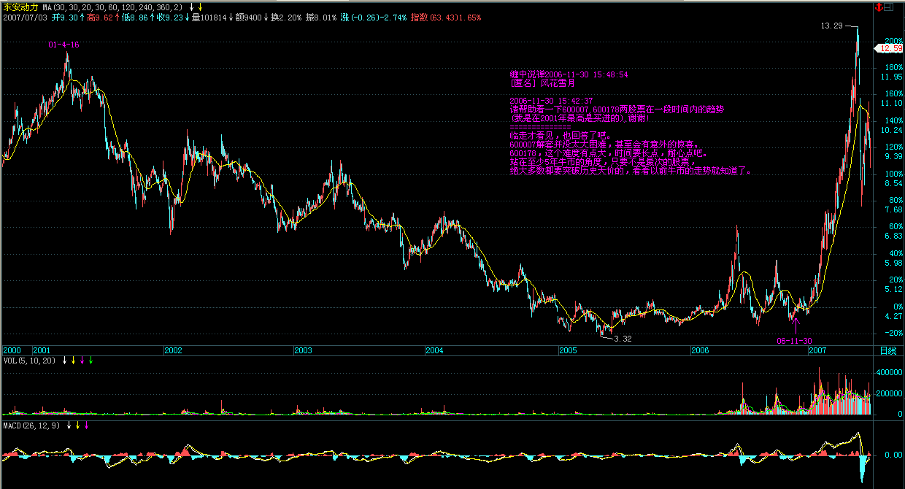
站在至少5年牛市的角度，只要不是最次的股票，绝大多数都要突破历史天价的，看看以前牛市的走势就知道了。
(2006-11-30 15:48:54)
------
[匿名] 呵呵
=========
孔二爷的思想最终的指归都是天下，修身最终也是为了天下，不理解这点是白学了。这几天股票比较火，问的人多，等几天股市大调整了，人自然少了，股市里的人都这个德行，如果不从根子上改变，依然悲剧不断。
=========
所以看股市的，也好好学学《论语》，半部《论语》治天下，就别说股市了。
(2006-11-30 15:53:54)
------
[匿名] 小明 2006-11-30 15:48:19
原来是站在“我本位”立场的胡扯，这点请仔细分辨。如果参照股票的操作，就更有意思了。慢慢想吧。 本ID晚上还有应酬，只能下了，再见。
=========
哦多谢楼主的提醒，俺会好好摸索的：） LZ整天跟哪些人应酬？ 大家猜猜看 应该是中国经济界的上层吧？
===========
本ID喜欢的东西太多，三教九流都有不少朋友，所以基本上晚上都有应酬。真的要下了，对不起，再见。
(2006-11-30 15:56:45)
------
[匿名] 想飞 2006-11-30 22:53:31
LZ,请教一个关于均线系统的问题:你所说的短,中,长期均线其实并不是市场通常意义上说的参数,而是按个人的操作习惯自行设定的,比如,可以把5,10,20线设成一个短中长期系统,不知我这样理解对不对
=========
根据你自己的资金量和操作水平来设置。
(2006-12-01 09:11:33)
------
大盘今天出现震荡是正常的，关键是5日线。只要5日线站稳，板块会继续轮动表现的。
(2006-12-01 09:13:03)
------
[匿名] ataoo0 2006-12-01 09:25:15
呵呵，我们单位昨天刚组织学习了《百家讲坛：于丹谈论语》， 想请楼主分析一下000063！谢谢
=============
中线潜力还没有充分发挥。买就算了，因为本ID从来不赞成别人追高，但如果连30天线都不触及，当然要坚决持有。
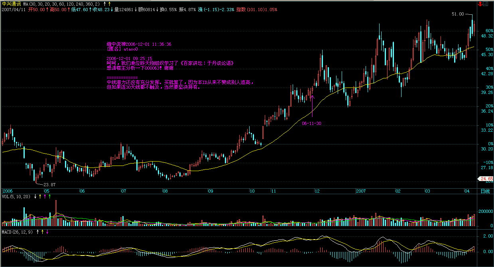
(2006-12-01 11:36:36)
------
今早走势和开盘时所说一致，下午，震荡依旧，但个股基本不要太考虑大盘。
有问题请到新帖子里去。
(2006-12-01 11:37:58)
------
|
|
|
|